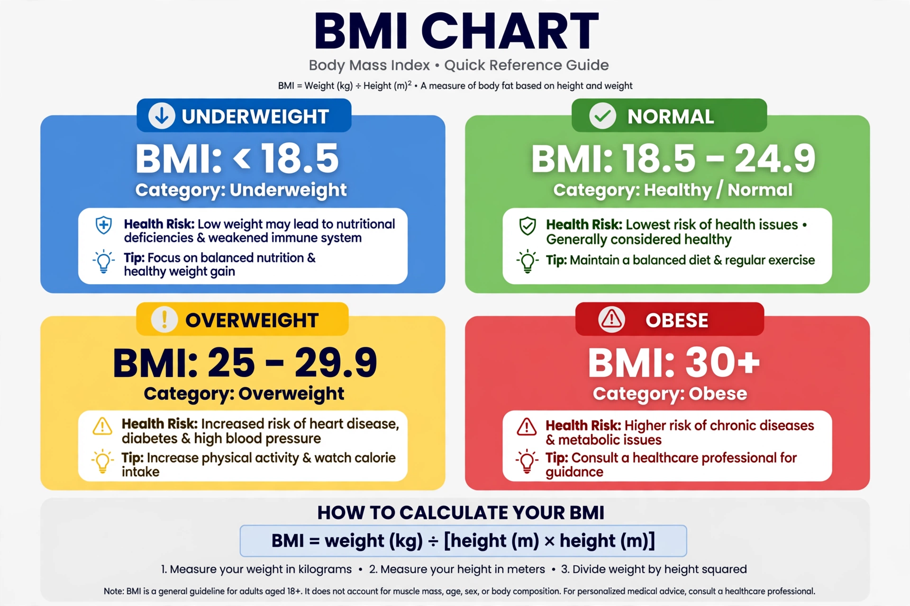

Body mass index
The body mass index (BMI) is a value derived from the mass (weight) and height of a person. The BMI is defined as the body mass divided by the square of the body height, and is expressed in units of kg/m², resulting from mass in kilograms and height in metres.
BMI = mass (kg) / [height (m)]²
The BMI may be determined using a table or chart which displays BMI as a function of mass and height using contour lines or colours for different BMI categories, and which may use other units of measurement (converted to metric units for the calculation).
 | |
| Synonym | Quetelet index |
|---|---|
| Formula | mass / height² |
| Units | kg/m² |
Categories
The BMI is a screening measure and an indicator of body fatness for most people. It is used to classify underweight, healthy weight, overweight, and obesity in adults. The WHO categories are:
- Underweight: below 18.5
- Healthy weight: 18.5 to 24.9
- Overweight: 25.0 to 29.9
- Obesity: 30.0 or higher (class I: 30–34.9; class II: 35–39.9; class III: 40+)
Lower thresholds (e.g. 23 for overweight and 27.5 for obesity) have been proposed for many Asian populations, in whom metabolic risk rises at lower BMI. For children and adolescents, BMI is interpreted as a percentile for age and sex rather than by fixed cut-offs.
History
The index originates with the Belgian statistician Adolphe Quetelet, who in the 1830s observed that weight in adults scales roughly with the square of height. The term "body mass index" was popularised by Ancel Keys and colleagues in a 1972 paper that validated the index as a simple proxy for adiposity in population studies. It was adopted by the WHO and national health bodies in the 1980s–90s as a standard screening tool.
Limitations
BMI does not distinguish fat mass from lean mass or fat distribution: muscular athletes may be classified "overweight", while people with normal BMI may carry high visceral fat ("normal weight obesity"). It performs less well in the elderly, in pregnancy, and across ethnic groups. Consequently, clinical guidance increasingly pairs BMI with waist circumference and other measures, and in 2023–2025 bodies such as the American Medical Association and a Lancet Diabetes & Endocrinology commission urged that BMI not be used as the sole measure of health or of obesity diagnosis.
See also
Categories: Body mass index · Classification of obesity · Anthropometry